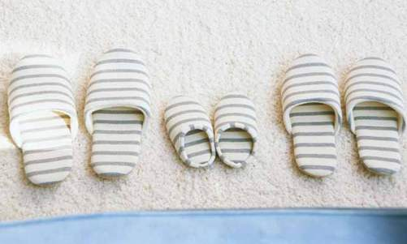

| アイディア発想力トレーニングマニュアル | |
| 高藤洋康 | |
| TAKATEC (2013) | |
秘められた能力「クリエイティビティ」を発揮し
充実した人生を送ろう
【クリエイティブな人】
になろう！


目 次
はじめに ...........................................................................5
第１章 クリエイティビティの基礎知識
１：子どものクリエイティビティに着目しよう...............10
２：クリエイティビティは誰もが持つ能力.....................12
３：クリエイティビティを発揮するために.....................16
４：クリエイティビティの本質を知ろう........................21
５：人生にクリエイティビティを取り入れよう...............28
第２章 ビジネスに於けるクリエイティビティの重要性
１：クリエイティビティが企業に与えるメリット............32
２：クリエイティブな環境を作ろう..............................35
３：クリエイティビティと遊びの関係...........................39
４：固定概念とクリエイティビティ..............................46
第３章 クリエイティビティの解放
１：クリエイティビティを解放しよう...........................50
２：クリエイティビティ解放のための１２ステップ.........52
３：クリエイティビティ解放まとめ..............................60
2


第４章 クリエイティビティを阻む敵
１：失敗を恐れずに挑戦しよう....................................61
２：諦めずに挑戦しよう.............................................64
３：常識や概念を忘れて考えよう.................................66
４：時間がないという言い訳は止めよう........................68
５：目標を明確に定めよう..........................................71
６：批判や否定は無視しよう.......................................73
７：先延ばしする悪習慣を断とう.................................75
８：完ぺき主義は捨て去ろう.......................................77
第５章 クリエイティビティと脳の関係
１：天才と一般人の違いとは.......................................79
２：右脳と左脳の働きの違いを知ろう...........................84
３：右脳と左脳の両方を鍛えよう.................................88
第６章 クリエイティビティの実践法
１：変化にクリエイティビティで対応しよう..................94
２：私生活でクリエイティビティを発揮しよう...............100
３：団塊の世代に見るクリエイティビティ.....................106
４：禅とクリエイティビティの共通点...........................111
おわりに ...........................................................................117
3


免責事項および使用条件
作成するにあたり最大限の注意を払っておりますが、本書に書かれた
内容および正確性、信頼性、あるいは適合性について、いかなる保証
もいたしません。
内容は、啓発目的で書かれたものです。本書に書かれた情報を実践す
る場合、その全責任は読者が負うものとします。
本書に記載した情報を実践した場合の成果について正確を期すために
あらゆる努力を行っておりますが、その完全性、正確性、信頼性、適合性、
あるいは有用性について、いかなる保証もいたしません。
得られる成果は人によって異なり、努力の程度やその他の要件によっ
て変わるため、必ず成果が出るという保証はできかねます。
直接的、間接的損害および利益、あるいは、本書に記載されている方
法を実践したことによって生じた、すべての損害および利益を含む、
すべての損害利益について、当方はその責任を一切負わないものとし
ます。
資格を持った専門家や有識者のアドバイスを受けてください。
4


はじめに
「クリエイティビティ＝創造力」とは、
まだ形になっていない「何か」を見ることだ。
その「何か」を、どのようにして
「存在する物」に変えるかという方法を
見つけなければならない。
そうすることで創造力を司る「神」と
友達になることができるのだ。
マイクル・シェイ（Michele Shea）
この言葉は、アメリカの有名なファンタジー作家、マイクル・シェイ
が語ったものです。
彼は、『魔界の盗賊』など独創的な世界観を持つ多くの作品を発表し、
世界中の読書ファンを魅了しました。このような優れた作品を生み出
すことができたのは、彼が「神」と呼ぶ「想像力」を味方に付けたか
らに他なりません。
5


クリエイティビティ ( 創造力 ) とは、芸術的な創作力、または、知的な
創作力のことを指します。
クリエイティビティは、創造したり現実に形を吹き込んだりする能力
で測る事ができます。
また、クリエイティビティとは、想像力を持って新たな形に作り変え
たり、何かを生み出したり、何か新しいものを形にすることといえます。
人が何かを作るときは、実際には何もないところから何かを生み出し
ます。
しかし、全く何もないところから物を生み出すにはどうすれば良いの
でしょうか？ どうすれば、クリエイティビティを発揮できるでしょ
うか？ そして、クリエイティビティの「本質」とは、いったい何でしょ
うか？
クリエイティビティとはおそらく、突然「これだ！」と、稲妻のよう
にひらめくではないでしょうか。
実のところ、はっきりと言葉で言い表せない、不可解なものなのです。
6


クリエイティビティは、実現不可能なことを考える「空想」に過ぎな
いのかも知れません。
これまで誰もやったことのないことを考え、実行し、全く新しい世界
を作り上げることだからです。
しかしそれは決して大それたことではなく、みなさんが日常行ってい
ることです。
例えば、問題解決したり仕事で新しい方法で取り組んだりする場合、
実はあなたは「クリエイティビティ」を活用しているのです。
7


このようにクリエイティビティにはいろいろな形があり、実は普段の
生活で、人間はその能力を活用しています。
科学に関するクリエイティビティを働かせれば、発明や治療法が見え
てくるでしょう。
芸術関連のクリエイティビティなら、美しい絵画、彫刻、あるいは、
オペラや楽器演奏といった才能に生かされます。
創造的な文芸活動ができれば、小説や詩が書けるでしょう。
クリエイティビティは、縫い物、編み物、木工といった工芸と同じほど、
実は簡単なものです。
クリエイティビティを最大限に発揮する際に大切なのは、１：アイデ
アを生み出すこと 、２：そのアイデアを具体的な形にすること 、その
２つともが「クリエイティビティ」だということです。
創造力、あるいは想像力といったものは、人間には必要不可欠な部分
であり、ここがほかの動物とは違う点であると言われています。
8


アメリカの心理学者、カール・ロジャース（Carl R. Rogers）はこう言っ
ています。
「クリエイティビティの本質は、その新規性であり、それゆえ我々はそ
れを判断するために使用される、標準的な尺度を持っていない」
つまり、とても定義しにくいものなのです。
この定義しにくいもの「クリエイティビティ」について、これから一
緒に考えていきましょう。
そしてあなたの中のこの秘められた能力を生かして、より充実した人
生を送りましょう。
9


第１章
クリエイティビティの基礎知識
１：子どものクリエイティビティに着目しよう
あなたは、就学前の幼児が遊んでいる様子を見たことがありますか？
この年代の子ども達は、驚くほど好奇心旺盛で、高いクリエイティビ
ティを持っています。
子どものクリエイティビティには、限界がありません。 大人の「常識」
に基づいて判断せず、世の中には不可能なこともあると教えられてい
ないからです。
10


子どもは恐れを知らぬ冒険家であり、芸術家であります。
いまだ型にはめられておらず、自分は何でもできる、できないことは
ないと信じているのです。
ところで、私たち人間には生まれながらにクリエイティビティが備わっ
ていることが、研究によりわかっています。
誰もがクリエイティビティを持っており、ごく幼い時期からその力が
表面化することも多いのです。
例えば一般的な大人の場合は、限られた状況下で３～４つの異なるア
イデアを思いつくものですが、子どもの場合は６０程度考えられるこ
とも、研究によりわかっています。
子どものクリエイティビティ能力の高さは、アイデアの数が単純に多
いだけでなく、その内容が素晴らしいものであることからも証明され
ています。
アイデアが多く出れば出るほど、より良い解決法が考え出され、最良
のアイデアは、たいてい最後に思いつくようです。
11


２：クリエイティビティは誰もが持つ能力
このように「クリエイティビティ」は、私たち人間が生まれつき持っ
ている能力です。
それは遺伝子の一部として、体の中に組み込まれています。
しかし残念なことに成長するにつれて、学校に行ったり仕事に就いた
りすることによって起こるプレッシャーによって、この能力を発揮で
きなくなる傾向があるようです。
日々の生活から来るストレスで疲れ果て、クリエイティビティが影を
潜めてしまうのです。
しかし、クリエイティビティは人間が幸せに生きていくために、欠か
せない「能力」なのです。
クリエイティビティがなければ、人生は決まりきって型にはまった、
退屈なものになってしまうでしょう。
12


ここで１つ、良いことをお教えしましょう。
私たち人間は、誰もが例外なくクリエイティビティを持っていると申
し上げました。
「でも、私にはちっとも創造力がない。絵も描けないし、音符も読めな
いし、褒められるような作文だって書けたためしがない。誰もがクリ
エイティビティを持っているなんて、とても信じられない！」
あなたはそんな風に言うかも知れません。確かにその通りかも知れま
せん。
多くの人は、偉大な音楽家であるモーツァルトでも、有名な天才画家
のダビンチでも、後世に名を残す作家シェークスピアでもないのです。
彼らの想像力は、確かに並外れたものだったはずです。
しかし、私たちには「私たちなりの」クリエイティビティがあるのです。
クリエイティビティを発揮するということは、芸術家になるというこ
とではありません。
あなたが持っている才能やスキルを理解することなのです。
13


ではここで、あなたにクリエイティビティがあるかどうか判断するた
めに、質問をします。「イエス」か「ノー」でお答えください。
１．常に新たな目標を求めていますか？
２．「もし～だったとしたらどうなるだろう？」と
考えるのが好きですか？
３．新しいことに挑戦するときはワクワクしますか？
４．人に何かを教えるのが好きですか？
５．問題解決が得意ですか？
以上の質問に１つでも「イエス」と答えられたなら、自信を持ってく
ださい！
あなたは十分クリエイティビティを持っている【クリエイティブな人】
です！
今はストレスで心や脳が疲れてしまって、その能力が十分に引き出せ
ていないため、自分はクリエイティブではないと感じているに過ぎま
せん。
あなたが持っているクリエイティビティを、もっと有効に活用しましょう！
14


クリエイティビティが生み出す「結果」は、必ずしも目に見えるもの
とは限りません。
新しいアイデア、問題解決、あるいは人に教えること...、こういった
ことにもクリエイティビティが発揮されるのです。
クリエイティビティを発揮することができれば、異なる視点でさまざ
まな行動をとることによって、自分を成長させることができます。
クリエイティビティを十分に活用して、自分をもっと深く知ることが
できれば、視野を広げることができるだけでなく、他人の物の見方も
理解できるようになります。
さあ、誰もが持っているこの素晴らしい能力「クリエイティビティ」
を駆使して【クリエイティブな人】になり、より幸せで充実した日々
を送りましょう。
私と一緒に、あなたの中の秘められた能力を、引き出していきましょう。
15


３：クリエイティビティを発揮するために
しかし自分では実感できていない、この隠れた能力「クリエイティビ
ティ」を発揮させるためには、いったいどうすれば良いのだろうかと
思っておられるでしょうね。
そのためには、「コツ」が必要です。
それを丁寧に説明していくのが、本書の目的です。
どんな分野でクリエイティビティを発揮するにしろ、それなりにコツ
やスキル、ある程度の専門的知識は当然必要です。
例えば科学的分野に関して全く無知な場合、新しい薬を開発すること
はできないでしょうし、車の構造が分からない人は車輪に代わるもの
を発明することはできないでしょう。
クリエイティビティを十分に発揮させるためには、まず、興味とスキ
ルそしてある程度の知識が伴った「あなた自身の専門分野」を探す必
要があります。
16


その次に重要なことは、あなたが選んだ専門分野で、クリエイティビ
ティを発揮することです。
クリエイティビティとは、あらゆる可能性を思い浮かべることができ
る「創造力」です。
これには、物事を考えて答えを見つけ出す能力も含まれますし、問題
が解決するまで粘り強く取り組む姿勢も必要です。
物事を全く逆の視点から見るなどの「コツ」を覚え、クリエイティビティ
を発揮できるコンディションを作り出しましょう。
そしてイザという時に力を発揮できる方法を知っておきましょう。
17


クリエイティビティをいかんなく発揮するコツの１つには、「勇気」が
あります。今まで経験したことのないことに挑戦する「勇気」です。
いくら優れたアイデアを思いついたとしても、それを実行する勇気が
伴わなければ、新しいものは何も生まれません。
新たな可能性があるなら、それが何であれ、受け入れましょう。
いつアイデアがわいて来るかは、その時になるまでわからないのです。
そして、熱意を持ちましょう。
何に対しても「成功させよう」という強い熱意を持ってください。
失敗に終わったとしても、成功させるという情熱が重要なのです。
天才として名高い物理学者のアインシュタイン (Albert Einstein) は、
こう言っています。
『私は天才ではありません。人より長く、一つのことに向き合っていた
だけです』
18


彼が言わんとしていることはつまり、「リスクを恐れない勇気と諦めな
い情熱を持つべきだ」ということです。
大人になると、さまざまなプレッシャーやしがらみからリスクを恐れ、
挑戦する勇気を持てなくなってしまいます。
幼年期に自由に発想しクリエイティビティを発揮できる理由は、「リス
ク」という考え方をまだ知らないからです。
子どもの頃のように、恐れを抱かずクリエイティビティを発揮するこ
とができれば、より良い人生を送ることができます。
19


子どもにとって遊び時間は、実際には「学びのプロセス」です。
子ども達はもちろんそのことに気づいていませんが、脳は、遊びなが
ら自然に学んでいるのです。
子どもは遊びを通じて、計算力や語学力、音楽や視覚的な芸術を学び
ます。
失敗やリスクを恐れずに、常に何かを発見して挑戦します。このよう
な子どものクリエイティビティを見習いましょう。
あなたにも子ども時代があったはずです。以前は、そのようなことを
していたのです。
途方もないと思われることを考えても構いません。
あなたがもし頭の硬い人なら、何に対しても「できない」と言うでしょ
う。しかし、クリエイティビティを発揮しフレキシブルに物事を考え
られる人なら、「こうすれば、できるよ！」と言うはずです。
誰でも【クリエイティブな人】になれます。自分にはクリエイティビティ
がないなどと、決して思わないでください。
20


４：クリエイティビティの本質を知ろう
ここで、質問です。
周りの人から【クリエイティブな人】と思われている人物に対して、
あなたはどのような印象を持っていますか？
変わっているとか、芸術家気取りだとか思いますか？
このような人は、うさんくさくて近寄りがたいと思いますか？
そのように人から思われるのがイヤだと感じる人は「私は現実的な人
間だから、クリエイティビティがあるとは思わない」と言うでしょうね。
21


世の中の多くの人が抱いている【クリエイティブな人】に対するイメー
ジは、このように偏ったものかも知れません。
しかしクリエイティビティを発揮する方法には、さきほども言ったよ
うにさまざまな方法があります。必ずしも、「芸術的」なことに限らな
いのです。 これを誤解しないでください。
あなたが発揮するクリエイティビティは、大勢の人を部屋に集めて、
何かを買うよう説得する能力かもしれませんし、会社に巨額の利益を
もたらす画期的な発案かもしれません。
もしくは、家族間や会社内の対立を解決したことはありませんか？
こういう経験をお持ちなら、あなたは十分【クリエイティブな人】な
のです！
こういった経験以外にも、なにかしらの分野で「才能がある」と言わ
れたことはありませんか？ それを自分でも事実と受け止めて、少な
からず誇りに思っていますよね？
それならなぜ、その才能をもっと活用しようとしないのですか？
22


あなたの持つクリエイティビティをいかんなく発揮するためには、何
をすれば良いでしょうか？
あなたの秘められた才能を全て解放するには、どうすれば良いでしょ
うか？ どのように才能を育てていけば良いでしょうか？
ぜひ一度、子どものように、日常生活やストレスといった制約のない
考え方に立ち戻ってみましょう。
画用紙と色鉛筆を手にして、円や模様を書いてみましょう。
小さなお子さんがいらっしゃれば、クレヨンで一緒にぬり絵を楽しみ
ましょう。
常識にとらわれない色使いに挑戦しましょう。枠からはみ出して塗っ
てもかまいません。
または粘土で、何か作ってみましょう。特別なものである必要はあり
ません。粘土とのふれあいを、ただ楽しむだけで良いのです。
押しつぶしたり、切ったり、丸めたり...いろいろな形にチャレンジして、
何か作ってみましょう。
23


「こんなばかげたことに、何の目的があるのか？」と言う人もいるでしょう。
目的などありません。 ただ、自由に遊びを楽しんでいただきたいのです。
あなたはやがて、この「目的のない」遊びがとても心地よく、いかに
リラックスできるか気づくはずです。何も考えずに遊んでいる間は、
リズムが安定し深い呼吸になります。
ストレスを感じていると短く浅い呼吸になりますが、リラックスして
いる今は、深い呼吸になっているはずです。
ストレスに対する攻撃反応や逃避反応も起こっていないでしょう。
このようなリラックスした状態でこそ、クリエイティビティを発揮す
ることができるのです。
24


クリエイティビティを十分に発揮するためには、日々の悩み事やスト
レスを心から追い出す必要があります。
職場でのトラブルや仕事のノルマの心配をせず、何の目的も設定せず
にただ遊ぶ時間が、あなたには必要なのです。
１日に数分だけでも、このような「目的のない」遊びをすれば、クリ
エイティビティをより発揮できるようになります。
こういった習慣を持つことで、次第にあなたの脳はさらにクリエイティ
ビティを発揮しやすいコンディションになっていきます。
自分を信じて限りない情熱を持ち、クリエイティビティを高めるよう
努力しましょう。
そして、才能を花開かせましょう。
さてここで、もう一度、あなたにお尋ねします。
「クリエイティビティ」という言葉から、どんなことを思いつきますか？
25


息をのむような芸術ですか？
全く独創的な考え方ですか？
興奮するような音楽作品ですか？
それとも、驚くべき発明でしょうか？
自分がクリエイティブな人になるなんてあり得ないと、信じ込んでい
ませんか？
きっとあなたは、長年に渡る悪しき習慣から抜け出せず、頭が硬い人
になっているのですね。
創造的な考えなどできないと、自分自身で決めつけていませんか？
あなたの思考はパターン化してしまい、変化のない毎日の習慣に埋没
しているのでしょう。
変わるなんてありえないと思っているのですね？
26


今ここで、日々をもっと自由に過ごせたら人生はどうなるか想像して
みてください。
あなたの持つクリエイティビティを活用して、人生を純粋に楽しむの
です。
【クリエイティブな人】になることが、充実した人生を送るための重要
なカギなのです。
27


５：人生にクリエイティビティを取り入れよう
「クリエイティビティ」とは、すべての人間が生まれながらに持ってい
る能力だと、すでにお分かりいただけたことと思います。
そして、その能力をいかんなく発揮することができれば、より幸せで
充実した人生を送ることができることも、理解できましたね？
【クリエイティブな人】になるメリットは、計り知れません。
クリエイティビティをいかんなく発揮して日々を送ることができれば、
例えば、以下のようなメリットを得ることができます。
１ 自信
２ ストレス緩和
３ 心の安らぎ
４ 人生のコントロール
５ 充足感
さらに、自己表現ができるようになり、目的も見つかります。
28


クリエイティビティを人生のあらゆる側面に取り入れることによって、
さらにメリットが得られます。
では、
【クリエイティブな人】になるためには、どうすれば良いのでしょ
うか？
まずは、身の回りのできることから始めましょう。
長年に渡って硬くなってしまった頭を柔らかくするためには、それな
りの時間が必要です。
いきなり大きな変化を求めずに、小さなことから始めてください。
29


例えば、今までとは少し違うアイデアを使って、情報収集や問題解決
に取り組んでみましょう。
工夫して、バラエティ豊かなアイデアを出してください。
もしネタに困ったら、ネットや友だちの意見を参考にしても構いません。
誰かのマネをするうちに、あなたのクリエイティビティが刺激され、もっ
と自分なりのやり方でやってみたい、と感じるようになるはずです。
そうなれば、あなたはもう十分に【クリエイティブな人】です！
【クリエイティブな人】になれれば、ビジネスの競争にも打ち勝てます。
競争が激しい今の世の中では、人と同じことをやっていては、勝ち残
ることはできません。人と違った物の見方で考え、実行することが必
要なのです。 今までの画一的なアイデアを、ひとひねりしてみましょう。
高いクリエイティビティを発揮して活躍している人は、直感力や優れ
た洞察力も持っています。
30


アカデミー賞を何度も受賞しているアメリカの有名な映画監督、フラ
ンク・キャプラ (Frank Capra) は、「直感とは、何かを教えてくれる創
造力である」と言っています。
一瞬にひらめく直感が、人生を左右するのです。
あなたがひとたび、【クリエイティブな人】になれば、人生にはいかに
多くの「一瞬のひらめき」が存在していることに気づくはずです。
そしてその直感の「価値」を失わないように行動するでしょう。
「直感」を上手く活用して決まりきった退屈な毎日から抜け出すことが
できれば、希望に満ちあふれて輝く未来や、人があっと驚くようなア
イデアが生み出せるようになるのです。
しかし、直感は一瞬のひらめきであり、あなたを待っていてくれるも
のではありません。
もしあなたの頭の中に素晴らしいひらめきが生まれたとしても、それ
に気づくことができなければ、全く無意味です。
常に新しいひらめきを追い求めてください。
31


第２章
ビジネスに於ける
クリエイティビティの重要性
１：クリエイティビティが企業に与えるメリット
今日の熾烈な競争社会で企業が生き残るためには、高い能力を持った
働き手を自社につなぎとめておくことが、これまでにも増して重要に
なっています。
そのために企業は、やりがいがあって創造的かつ楽しい職場環境を提
供しなければなりません。
クリエイティビティをいかんなく発揮できる職場の雰囲気作りを進め
ることは、会社の規模に関わらず、雇い主として当然の義務と言えます。
32


では、企業がこのような職場環境を整えるために行った投資に対して、
どのような成果が出ているのでしょうか？
ここに、アメリカの新聞社ウォール・ストリート・ジャーナル社が発
表した興味深い情報があります。
日本にも進出している、アメリカの企業ジェネラル・エレクトリック
社で、２年間に渡って社員に対しクリエイティビティに関する講座を
提供したところ、特許が取れるようなアイデアの創出が６０％増加し
たとのことです。
また、コンピューター製品で有名なヒューレット・パッカード社では、
研究開発に２億円を投じた後の１９９９年には、１３００もの特許が
取れました。
その他にも、数千人の社員に２４時間に渡ってクリエイティビティを
発揮した問題解決法の講座を提供した会社が、投資額１００円に対し
て２０００円分の増益を得たという情報もありました。
33


このように、社員にクリエイティビティを発揮する方法を身につけて
もらうことで、企業にも大きなメリットがあります。
では、あなたの会社は、社員が前向きに革新的なアイデアを継続して
生み出すためにどのようなことをしているでしょうか？
この章で、一緒に考えていきましょう。
34


２：クリエイティブな環境を作ろう
【クリエイティブな社員】は、企業に多くのメリットを与えてくれます。
すべての社員が自由に創造できるクリエイティブな職場環境を作るた
めに必要なポイントを、いくつか挙げましょう。
・クリエイティブな人材を探しましょう
高い知性を持った革新的な人物を尊重しましょう。
・クリエイティビティを発揮できる雰囲気を作りましょう
躊躇なくアイデアを出せる環境を作りましょう。
最初は、成果が出ないアイデアでも否定してはいけません。
次は、もっと新鮮なアイデアが生まれてます。
・高いクリエイティビティを持つ人材に注視しましょう
創造力を育成し、目に見えるサポートをすることが重要です。
可能性が高い革新的な人材を支援しましょう。
・成果を出した人材には表彰やボーナスを与えましょう
35


世界的に競争が激しい今の世の中では、社員と経営者側が共に手を携
え、創造的な変革を起こさなければ生き残っていくことはできません。
「変な人」とか「頭がおかしい」などと蔑視されることなく、安心して
クリエイティブなアイデアを出せるような、職場環境を作りましょう。
批判や嘲笑を恐れずに、どんどん発言できる雰囲気を提供しましょう。
お互いに尊重し合うことによって、直感や創造力が育まれます。否定
や批判は避けましょう。 自分を受け入れてくれる雰囲気が整っていれ
ば、皆、やる気が出ます。やる気が出れば、クリエイティビティを発
揮できるチャンスも増えますし、実行力もついてきます。
不安な思いで出社する必要は、なくなるでしょう。生きるために必要
なお金を得るための「仕事」が、辛いだけの場ではなく、居心地の良
い安息の場所となるのです。
職場が自分を認めてくれる居心地のいい環境となるため、ストレスも
大幅に軽減されます。
クリエイティビティを自由に発揮できる職場なら、やる気も出ます。
職場全体の雰囲気も見る間に変わっていくでしょう。
36


あなたが経営者なら、ぜひ、この改革にチャレンジしてみましょう。
クリエイティブな環境を作ることで、経営状態が良くなるかどうか確
かめてみましょう。
すでにご説明したような効果が出ている実例があっても、この改革に
取り組むのをためらう企業も多いようです。なぜなら、クリエイティ
ブな社員の統制が取れず、職場が混乱すると思っているからです。
クリエイティブな人材は、非論理的で管理しにくく手に負えない人間
だと頭の硬く経営者は言うのです。しかし、適切な方法でアプローチ
すれば、必ずしもそうとは限りません。これは、経営者自体がクリエ
イティブではなく、リスクや変化を恐れているからに過ぎません。
37


このような企業が今後、生き残って行く可能性は恐らく低いでしょう。
社内でクリエイティビティを発揮することを奨励し、クリエイテで有
能な人材をサポートすれば、業種に関わらず企業としての競争力がつ
きます。
少し古い情報ですが、１９９８年１月のアメリカの雑誌「フォーチュン」
によれば、高いクリエイティビティを発揮できる社員はそうでない社
員に比べて、１２７％生産効率が良いということです。
これは実に簡単な理屈です。
なぜなら、会社にも仕事にも満足していれば、やる気が出て仕事に対
する意欲が増し、生産効率が上がるのです。
これは全く、当然のことです。
つまり、精神的に満足している社員こそが、会社にメリットをもたら
す有能な社員なのです。
38


３：クリエイティビティと遊びの関係
残念なことに現代の日本には、仕事に埋没してしまっている人が数多
くいます。四六時中忙しいわけではないと思っているかも知れません
が、それは「忙しさ」に対する感覚がマヒしているからに過ぎません。
日本では、休むことなく働いていなければ、怠けていると周りから思
われてしまいます。
しかし「忙しい」という状況自体は、自尊心が低下する兆候ですから
避けましょう。忙しいという字は、「心を亡くす」と書くくらいですか
らね。
たまには、何もせずにじっとしていても良いのです。
なにか解決しなくてはならない問題が起こった時は、すぐに答えを出
さず、しばらくの間、頭の中を空っぽにしてください。
「解決しなければ」という強迫観念から解放されれば、頭がリラックス
出来て、意外にたやすく答えが出るものです。
39


空想をすることは、【クリエイティブな人】になるために有効なトレー
ニング方法です。
実際に空想することを積極的に子どもに奨励すれば、知能指数（ＩＱ）
がアップすることが知られています。
習慣的に空想をすることによってクリエイティビティが高まり、脳を
積極的に働かせることができるのです。
あなたも、同じようにやってみましょう。
【クリエイティブな人】になるためには、子どもの頃のような遊びの要
素が必要なのです。
40


ところで、一般的に会社員の関心度の高さは給料だけではなく、労働
時間と私生活のバランスが取れているかどうかであると言われていま
す。
つまり、優れた社員に期待通りの成果を上げるよう働き続けてもらう
ためには、仕事と遊びのバランスを上手く保てるように、会社側が配
慮しなければなりません。
適度な長期休暇や勤務後のプライベートな時間、そして心地良い職場
があってこそ、積極的に仕事に取り組むことができるのです。
生産効率の高い仕事をするためには、心身がリラックスした状態でな
くてはなりません。
楽しんで仕事ができれば、満足度が高まります。
そうすれば、心の中のもやもやも晴れ、すっきりとした考えができる
ようになり、生産性も向上するのです。
ストレスや不安のない状態であれば、解決できないと思われた難問に
対しても、どんどんひらめきが出て来るようになります。
41


充実した人生を送るためには、クリエイティビティと遊びが不可欠で
あることが、最近になってやっと理解されるようになってきました。
かつての日本人の持っていたような「根性論」は、あまり効果がない
ことが分かってきたのです。
仕事一辺倒だった人生スタイルは過去のものとなり、人々は人生に目
的意識を持ち、仕事や職業について見直すようになっています。雇用
の安定を考えていたのは、一時代前のことです。
企業側が職場のクリエイティビティを奨励しない限り、その企業に未
来はありません。
42


多くの企業で、頭がきれる社員が中心となって団結力を発揮し、クリ
エイティビティを発揮できる職場環境を作る傾向にあります。
例えば、職場の「部署」という概念を取り払い、オープンな状態にし
て風通しの良い職場環境を作る流れなどがそれに当たります。
社内の SNS システムなどを使い、互いにコミュニケーションを取り合
うことも、ごく当たり前になりました。
トップダウン方式を取りやめ、上司が部下の立場に立って同じ目線で
付き合うことによって、職場の現状が終始わかるようになります。
命令指揮系統を単純化し職務を拡大し、社員がクリエイティブで革新
的なアイデアを出せるよう、奨励しています。
43


良いアイデアがすぐに思いつかない時でも、子ども時代の「遊び」の
感覚を忘れなければを、必ずあなたのクリエイティビティを発揮でき
る瞬間がやってきます。
ストレスがあると自分に自信がなくなり、自由な気持ちで発想するこ
とができなくなります。そのような状態では「どうどう巡り」に陥っ
てイライラし、「私は降りる！」と宣言したくなることでしょう。
しかし、答えは必ず見つかります。諦めないでください。
もし、自分の思考が行き詰まったと感じたら、頭を一度、空っぽにし
てみましょう。
すでに説明したように、ストレスが高い状態では、クリエイティビティ
の能力は低下してしまいます。それが「遊び」が必要だと申し上げて
いる理由です。
ストレスができるだけない状態を自分の中に作り出して、脳を解放さ
せてあげる必要があります。
たいていは、仕事以外のことをしている時に素晴らしいアイデアが湧
き上がってくるのです。
44


近所を散歩したりドライブしたりすれば、状況は一変します。
忙しいからと言ってデスクに向かっているだけではなく、休憩をとっ
て、心と頭を少し休ませましょう。
上司、仲間、先生や家族、テレビでさえ、四六時中「あれをしなさい、
これをしなさい」と言いたがるのです。
これらの雑音から逃れてストレスを解放し、あなたのクリエイティブ
な心を取り戻してください。
45


４：固定概念とクリエイティビティ
どのような職場でも、何かしらの問題は必ずあるはずです。
日々起こるさまざまな問題をスムーズに解決するためには、クリエイ
ティビティが必要です。
クリエイティブな発想がなければ、何も変えることができないからで
す。
問題を解決するためにはまず、それを取り巻くあらゆる状況を知る必
要があります。
トラブルが起こった状況を調べ、原因を突き止め、関連する情報もつ
かんでおかなければ、事態の収拾を測ることはできません。
あらゆる事実をチェックし、正しく整理して分析しましょう。
ときには、意味のないように見える事柄が見つかることもあるでしょう。
しかし、自分で気がつかない事柄に、重要な問題解決のヒントが隠さ
れていることがあります。
46


「いつもこの方法でやってきた」という固定概念に捕われていると、事
実が見えなくなってしまいます。
いつもこの方法でやってきたと言うなら、なぜトラブルが起こったの
でしょうか？
明らかに、現在うまくいっていないのです。
その事実を冷静に受け止めて、クリエイティビティを発揮し、問題を
解決しなくてはなりません。
47


マイナス思考に陥って、頭の中の「解決するのは無理だよ」と小さな
ささやきに耳を傾けてはいけません。
この声は無視してください。
残念ながらこのような声は、周囲の人からも聞こえてくることがあり
ます。
「そんな方法じゃ、ダメに決まっているよ、あなたには無理だよ」と...。
しかしそれらは恐らく、あなたのクリエイティビティや成功をねたむ
人々の悪意に満ちた発言なのです。
このような言葉があります。
『斬新なアイデアを持つ人間は、成功するまでは変人扱いだ』
確かにその通りです。
有名な発明家として歴史に名を残している人々も、最初はその発想の
意外性に、みな首をかしげ、変人扱いしたものです。
48


例えば、飛行機を発明したライト兄弟のエピソードを思い出してくだ
さい。
体に羽のようなものを取り付け、崖から飛び降りた行為を見た人々は
誰もが、彼らは頭がおかしいと思ったに違いありません。
まわりの雑音に耳を貸していては、【クリエイティブな人】にはなれま
せん。
これは【クリエイティブな人】になるためにとても大切な「コツ」の
１つです。
49


第３章
クリエイティビティの解放
１：クリエイティビティを解放しよう
これまでご説明してきたように「クリエイティビティ」は、あなたが
幸せで充実した人生を送るために「マスト」な能力です。
さて、ここまで本書を読み進めてきたあなたは、自分が実は【クリエ
イティブな人】であるという事実を受け入れることができたはずです。
次に取り組むべきことは、その能力をいかんなく発揮する方法を学ぶ
ことです。
50


この章では、具体的にどうしたらあなたのクリエイティビティを発揮
できるようになれるのか、その方法をご紹介しましょう。
思ったようにうまくいかなくても、自分につらく当たらないでくださ
い。
新しいことに挑戦する時は、最初から何でも上手くいくと思ってはい
けません。
これまで多くのストレスによって抑圧されてきたあなたの「クリエイ
ティビティ」を解放するためには、努力と時間が必要です。
それを肝に銘じて、取り組んでください。
51


２：クリエイティビティ解放のための 12 ステップ
ではここで、具体的にどのようにあなたの秘められたクリエイティビ
ティを解放するか、１２のステップに沿って説明しましょう。
１：まず、あなたのクリエイティビティを解放させやすい空間を作り
ましょう。
できるだけ、騒音などで気が散ることなく、落ち着いてリラックスで
きる場所に身を置きましょう。
２：次に、机を用意してください。
そして、座り心地が良い椅子と、眩し過ぎず暗過ぎないほどよい照明
を用意しましょう。
この段階では、あなたのクリエイティビティを使ってアイデアを形に
することに力を注ぎます。
静かな環境で脳がリラックスし、ひらめきがわいてきますね。
より集中するために、環境音楽などや頭がスッキリする香りを取り入
れると良いでしょう。
52


３：筆記用具と紙を手元に用意します。
書くよりも言葉に出した方が発想しやすいという人は、音声や動画収
録用の機械などを利用しても構いません。
手書きが苦手なら、パソコンを利用しても問題ありません。
自分が一番使いやすい媒体を使用してください。
記録することにストレスを感じる状態では、リラックスできないから
です。
４：アイデアをひとつ残らず記録してください。
今あなたが発想しているアイデアは、一瞬のひらめきです。
後になって、思い出すことはできない可能性が高いものばかりのはず
です。
この段階では、批評することは絶対に避けてください。
頭の中に浮かんできたアイデアは、どんなにバカげた妙な考えだと思っ
ても、全て記録してください。
53


５：マイナス思考にならないでください。
今は自己批判をするときではありません。
マイナス思考に陥ると、ストレスを感じ、クリエイティビティを発揮
できなくなります。
心を自由にしてください。
６：１回につき、１５分程度取り組んでみましょう。
人間の脳は、それほど長い時間、集中することはできません。
発想が湧いて来ないのに、無理に机に向かっていると逆効果になりま
す。
１５分ほど時間を過ごしたら、休憩を取りましょう。
立ち上がってストレッチをしたり、散歩したりして、リラックスしま
しょう。
54


７：毎日、空想にふける時間を取りましょう。
あなたのクリエイティビティを解放するためには、毎日少しずつ行う
訓練が必要です。
例えば、毎日このように自問してください。「○○したら、どうなるだ
ろう？」
今、自分が持っている固定概念に捕われず、突拍子もない空想をする
習慣をつけるのです。
そして自分が【クリエイティブな人】であることを思い出しましょう。
子どもの頃に持っていた好奇心を思い出し、それをずっと持ち続けま
しょう。
55


８：どんなことに対しても疑問を持つ習慣を持ってください。
もし、あなたの頭の中に『今までずっとこのやり方でやってきた』と
いうセリフが出てきたら、要注意です。
固定概念にとらわれず、従来の考えに疑問を持ち、良い意味で自分の
考え方を批判しましょう。
なぜ従来のやり方が正しいと思うのか、理由を明らかにしましょう。
そして、同じ結果をもたらす可能性がある新しい方法を考えましょう。
９：日記をつけましょう。
現代人は忙しいあまり、自分の時間を持てない人が増えています。
しかし、携帯電話やスマホで、誰かと交流する時間を持ったり、ネッ
ト通販のサイトを見たりする時間くらいはあるはずです。
あなたのクリエイティビティを解放するには、そういった時間を使っ
て、日記をつける習慣を持つと効果があります。
56


日記は、あなたのクリエイティビティを発揮しやすく、どんどん湧き
出してくる素晴らしいアイデアをモレなく記録できる、優れた方法で
す。
いつでもどこでも、一瞬のひらめきを記録できるよう、環境を整えて
おきましょう。
１０：楽しんで取り組みましょう。
当たり前のことに思われるかもしれませんが、「イヤだイヤだ」と思っ
ていると、楽しむことはできませんし、長続きしません。
あなたにとって特に関心がある分野や、好きだと思えることを選べば、
より効果が出やすくなります。
かの有名なシェークスピアも、「楽しんでやらなければ何ごとも身につ
かない。あなたが一番好きなことを学びなさい」と言っています。
あなたが大好きなことをすれば、成功できるということです。
興味があって楽しめることであれば、努力も惜しまずにできるはずです。
57


１１：自分にごほうびをあげましょう。
「飴と鞭」という言葉をご存知ですか。
人間は、厳しいことばかりが続く状態では、楽しむことができませんし、
長続きせず結果的に失敗に終わってしまいます。
クリエイティビティを解放する上でも同じです。
自分に「ごほうび」をあげると、やる気が持続し、がんばれます。
１２：さまざまな方法に挑戦しましょう。
今、あなたが取り組もうとしていることは、今までの自分の経験とは
全くことなる行為のはずです。
ですから、自分がどういう環境にいれば、よりクリエイティビティを
発揮することができるのか、あなた自身にも、まだ分かっていないで
しょう。
「ひらめき」が、自然に湧いて来るのを待っていてはいけません。自分
にとって、一番クリエイティビティを発揮しやすい環境や方法を探す
ために、いろいろと挑戦してください。
58


どういった状況が一番発想しやすいのかは、人それぞれですから、さ
まざまな方法に挑戦して、自分なりの方法を見つけてください。
クリエイティビティを解放し、素晴らしいアイデアを出すために集中
できる方法であれば、どんなものでも構いません。
59


３：クリエイティビティ解放まとめ
重要なことは、クリエイティビティを解放できるコンディションを自
由に作り出せる方法を身につけることです。
時間と努力が必要でしょうが、これからの人生を充実して過ごせるの
であれば、今やる価値はあります。
意識しなくても、自然に物事に対して疑問を持つとか、他の状況を空
想するとかいうことができるようになれば、もう自分をほめて良い段
階まで来ています。
あなたは、十分にクリエイティビティを解放し【クリエイティブな人】
になれていますよ！
そして、次なる段階は、その素晴らしいアイデアをどのように行動に
移すかということです。
「何かが動くまで、何も起こらない」という言葉があります。
あなたの素晴らしいアイデアを、実行に移しましょう。
60


第４章
クリエイティビティを阻む敵
１：失敗を恐れずに挑戦しよう
これまで説明してきたように、クリエイティビティを発揮するために
一番の大きな障害となるのは、「失敗に対する恐怖感」です。
日本には一般的に、失敗することを恥と感じる文化があるようです。
しかし良く考えてみると人間は、子どもの時から失敗を繰り返すこと
によって学んでいく生き物なのです。
61


失敗をしなければ、学ぶことはできません。
そもそも「失敗」と考えるのではなく、成功するための経験と捉える
べきではないでしょうか。
失敗を恐れる気持ち、物事を適切に行えないのではという不安、そう
いった気持ちがあるとストレスを感じるため、クリエイティビティを
発揮することはできません。
「失敗したらどうすればいい？」
「人に笑われたらどうしよう？」
「ばかげた考えにすぎなかったらどうしよう？」
不安なあまり、このような考えが次々に頭の中に浮かんできて、結局
は挑戦せずに諦めてしまうのです。
誰もが、失敗するのです。
最初から何もかも上手く出来る人はいません。
62


偉大な発明家エジソンでさえ、何度も何度も失敗し、試行錯誤を繰り
返して電球を完成させたのです。
成功者と、挑戦せずに諦めてしまう人の違いがお分かりですか？
エジソンは、その失敗を失敗と捉えず『うまくいかない方法を発見し
ただけだ』と考えたのです。
そして彼は研究を続け、最終的に成功を収めました。
失敗を恐れてはいけません。
完ぺき主義は、あなたのクリエイティビティを妨げます。
「失敗をしたことがない人は、新しいことに挑戦をしたことがない人だ」
という言葉があります。
多くの失敗を経験する方が多くのことが学べます。
63


２：諦めずに挑戦しよう
クリエイティビティを発揮する上で、もう１つの障害となる敵の存在
は、「諦めてしまうこと」です。
あなたは自分にはクリエイティビティがあるということは、すでに十
分に分かっていることと思います。しかしこのクリエイティビティは、
長い間、あなたの中で息をひそめていた、秘められた能力なのです。
この能力が自由に活動を再開できるようになるまでには、それなりの
時間と努力が必要です。
すぐに成果がでなくても、諦めずにクリエイティビティを解放する訓練を
続けていれば、必ず「一瞬のひらめき」を獲得できる時がくるのです。
64


「一瞬のひらめき」...それは、思いがけず訪れる幸運でしかありません。
それは突然、あなたに訪れます。
あなたの潜在意識から来るものです。
しかし、それをただじっと黙って待っているだけでは、ダメです。
考えが行き詰まった時には、全く別のことをする必要もあります。
同じことを同じ方法で何度も繰り返していながら、別の結果を期待す
るなんて、どう考えても、つじつまがあいません。
他の方法を試すからこそ、別の結果が生まれるのです。
ここで、クリエイティビティが必要になります。
つまずいても諦めず、エジソンのように何度も挑戦してください。
そうすれば、「一瞬のひらめき」があなたの頭の中に湧いてくるでしょ
う。
65


３：常識や概念を忘れて考えよう
本書をここまで読み進める前のあなたは、他の人と同じように【クリ
エイティブな人】に対して、少なからず好ましくない印象をお持ちだっ
たことでしょう。
しかし、今は、「クリエイティビティ」というのは必ずしも自分の持っ
ていたイメージと合致するものではない、という事実に気づいていた
だけたはずです。
つまり、そう考えるようにできたこと自体が「クリエイティビティ」
を発揮した、ということなのです。
これまであなたが持っていた常識や固定概念とは反する考え方を受け
入れる、それこそがクリエイティビティの本質です。
常識や固定概念にとらわれていては、決して【クリエイティブな人】
にはなれません。
多くの人にとって、「常識にとらわれない」考え方をするのは難しいこ
とであり、そもそもそういう考え方をすることに慣れていません。
66


人間は、「習慣」が好きな生き物であり、いつもやっているように物事
を行う傾向があります。
人生で最もクリエイティビティを発揮することができる、幼児期でさ
え、毎日の習慣を繰り返すことを好みます。
なぜなら、自分の予想に反する事柄が起こると、人間は不安になるか
らです。ですから、人間が習慣を好むのは、ある意味、本来の性質な
のです。
しかし、この習慣にとらわれ過ぎてしまうと、人間はクリエイティビ
ティを失ってしまいます。
毎日、全く同じことを繰り返し、人生に何の疑問も持たず、淡々と日々
を送って一生を終えていきます。その方が「楽」だからです。
しかし本書を手に取ったあなたは、そういった人とは違うはずです。
自分の人生や生き方に疑問を持ったからこそ、何かを変えてみたいと
思っているはずです。
今までの習慣から逃れるためには、クリエイティビティを発揮する必
要があります。
67


４：時間がないという言い訳は止めよう
時には日常生活そのものが、あなたからクリエイティビティを奪って
しまいます。
あなたは、仕事や家事、あるいは年老いた両親の介護などに、毎日身
も心を砕いていることでしょう。
これらの日々のことに時間をとられ、うんざりしているなら、「時間が
ない」という言い訳をしてはいけません。
【クリエイティブな人】になれれば、時間をもっと有効に使うことがで
きるのです。
日常生活に創造力を取り入れることが、あなたの最初の課題です。
まずは、数分を自分のために使うことから始めましょう。
自分の直面している問題を明らかにし、解決するための方法を考えら
れるよう、クリエイティビティを解放する訓練をします。
68


「しなければならないことがあまりにもたくさんあるから、時間がない。
どうやって自分のための時間を作ればいいのか分からない」そうおっ
しゃる方もいるでしょう。
そう思ってしまった時点で、あなたは「負け」です。 もうクリエイティ
ビティを解放することを、その時点で諦めてしまっています！
できないことなど、ないはずです。幼い頃、あなたは自分の可能性を
そのように信じて、クリエイティビティをいかんなく発揮したではあ
りませんか！
あなたは【クリエイティブな人】なのです、自信を持ってください。
69


例えば、こんな方法はいかがでしょうか？
仕事からやっと帰宅して、幼い子どもに時間を取られるようなら、こ
こでクリエイティビティを働かせましょう。
ぬり絵、粘土遊び、読書といった子どもたちとの遊びの時間は、クリ
エイティビティを解放するために理想的です。子どもは親と一緒に何
かをするのが大好きですから、子どもにとってもメリットがあります
し、あなた自身もリラックスできて、一石二鳥です。
親の介護に忙しい方の場合は、ゲームやクリエイティブなアクティビ
ティに一緒に取り組みましょう。
就寝前の数分は、静かに腰を下ろし、頭を空っぽにしましょう。
１日に数分間だけでも、何も考えずに脳をリラックスさせる状況を作
ることは、クリエイティビティを解放するために効果があります。
この習慣を身に付けることができれば、精神的にもリラックスでき、
引いては健康状態も改善します。
70


５：目標を明確に定めよう
多忙な生活でも、クリエイティビティを解放させる訓練はできるのだ
と、分かっていただけましたね？
しかし、あなたのクリエイティビティを阻む敵は、これだけではあり
ません。
目標を見失う、もしくは、目標が分からないという状況です。
ときには、目標と逆方向を向いてしまったり、目標そのものに疑問を
感じてマイナス思考になることもあるでしょう。
あなたがもし、目標を明確にできない状態であれば、成功することは
できません。
自分の望むものが何か明確にわからないままでは、進歩は望めないの
です。
目標を明確にすれば、達成に向けて歩き出せます。
71


そして、計画を立てましょう。
ここで再び、あなたのクリエイティビティが必要になります。希望を
叶える方法をいろいろ考え、それに沿った実行計画を立てましょう。
必要に応じて、段階を踏んだタイムラインを作りましょう。
そして、その計画に従ってください。
心の中に具体的な計画や目標を持つことが大切です。明確な目標がな
ければ、日々のつまらない行動に固執してしまいます。
ここで大切なことは、他人の価値観ではなく、自分のための目標を見
つけるということです。
例えば親や家族が、あなたへの期待感を必要以上に押しつけ、彼らの
目標を自分の目標であるかのように錯覚するケースがあります。
しかし、これはあなた自身が考え出したものではありません。
自分の創造力を持つことができなければ、あなた自身の目標を見つけ
ることはできないでしょう。
72


６：批判や否定は無視しよう
そのほかにも、あなたのクリエイティビティを阻む敵は、数多くいます。
それは、周囲の人からの批判です。批判を、無視できるようになりましょう。
人生には批判はつきものです。
一般的に、人間が批判する理由は、あなたに対する嫉妬心です。自分
よりも、あなたが幸せに近づいていく様子を見ているのが耐えられな
くて、批判して思いとどまろうとさせているに過ぎません。
こういった嫉妬心からくる批判や否定を無視する方法を、ぜひ身につ
けましょう。
73


自分自身についても、自己批判をしてしまうことがあります。
心の中に、内なる批評家がいると最悪です。
四六時中、批判が聞こえてくることになります。
あなたの耳の奥で、 こんな声がするのです。
「自分を何様だと思っているの？ あなたがクリエイティブな人だなん
て、笑っちゃうわ。こんなゴミみたいなアイデアしか浮かばないくせ
に！」
何か創造的なことに取り組んでいる最中に、心の中の批評家を締め出
すには訓練が必要ですが、あなたにとって必要なことです。
もしマイナス思考に陥って、自分を否定するような状況になったら、
できるだけ頭の中を空っぽにして、楽しいことを空想しましょう。
そうすれば、次第に脳がリラックスして、あなたのクリエイティビティ
は活発に活動できるようになるはずです。
74


７：先延ばしする悪習慣を断とう
ぐずぐずと先延ばしすることも、クリエイティビティを阻む最大の障
害となります。
いろいろなことを言い訳にして毎日先延ばしにして何週間もたち、や
がて何か月も過ぎていくのです。本心では時間がないと思っているわ
けではないのですが、ただなんとなく時間が過ぎてしまうのです。
先延ばしは、見逃せないほど大きな障害となります。 もっともらしい
理由に思われるからです。
結局のところ、あなたは非常に忙しく、することもたくさんあって、
多くの人から頼られており、時間も割かなければなりません。
そういった状況に甘んじて先延ばしにするのが楽なので、新しいこと
に敢えて取り組もうとしないのです。
取りあえず今のままでうまく行っているのだから、なぜ敢えて冒険を
しなくてはならないのか、あなたはそんな風に思っているのかも知れ
ません。
75


先延ばしをする理由には、いろいろな種類があります。
プレッシャーがあったほうがいい仕事ができると自分に言い聞かせ、
最後の最後までやろうとしない人もいます。こういう人は、プレッ
シャーがあってもなくても、何もしません。
失敗を恐れる人、あるいは成功を恐れる人も、新しいことに踏み出そ
うとしません。
このような人たちは、目標達成に必要な能力がないというよりむしろ、
怠惰な考え方をしているのでしょう。
問題は、その内容が何であれ、やる気が今ひとつ出ず気持ちがワクワ
クしないことにあります。
そのため、言い訳を次から次へと並べ立て、できる限り先延ばしして
しまうのです。
あなたのやる気が、自然に出てくるような内容を考える必要があるで
しょう。
76


８：完ぺき主義は捨て去ろう
クリエイティビティを阻む敵の最後として、
「完ぺき主義」を挙げましょ
う。完ぺき主義とは聞こえが良い言葉ですが、実はこういった考え方
は大きな障害になります。
「完ぺき主義」とはつまり、完全に正しいとは言えず、達成したことに
決して満足できないのです。
しかし世の中には「完ぺき」などというものは、存在しません。
もしあなたにとって完ぺきなものがあったとしても、人はそれぞれ違
う価値観を持っています。
同じ物を、他の人は気に入らないことだってあるのです。
多くの人が「完ぺき主義」という考え方にとらわれ、最終的にプロジェ
クトを断念します。
うまくいかないなら、終わらせる必要はないという理由づけをしてし
まうのです。
これは、創造的なプロセスにとっては致命的なものです。
77


「完ぺき」というものはないのですから、求めても無駄なのです。
時間を無駄にしていることになります。
こういった考え方にとらわれた場合、子どもらしい創造力に立ち戻ら
なければなりません。
子どもは、完全なものを手に入れたかどうかは気にしません。
完ぺきなものを求めて挑戦することが好きなのです。
完ぺきにやろうとして何度失敗しても、努力を続けます。
満足できるようにできなかったことがありますね。
そんな時、母親はあなたに「ベストを尽くせばいいのよ」と言ったは
ずです。
完ぺき主義など、捨て去ってください。
78


第５章
クリエイティビティと脳の関係
１：天才と一般人の違いとは
世の中には、「天才」と呼ばれる人々がいます。
天才と一般人には、どのような違いがあるのでしょうか？
クリエイティビティに関する専門家の１人は、『天才は「何を」考える
べきかではなく、「どのように」考えるべきか知っているという点が違
う』と言っています。
79


このような思考回路を持っているため、天才は全く新しい概念を生み
出すことができるのです。
そして自分に対して、「何でもできる」と自信を持てるのです。
天才は、問題に対して、さまざまな異なった角度から観察することが
できるというわけです。
アイデアとイメージと思考を、自由に組み合わせることができる人です。
一見、バラバラで全く関連性がないように見える物事でも、それらを
関連付けるコツを知っています。
こういった優れた天才の一例として挙げられるのが、レオナルド・ダ
ビンチです。
彼は、鐘の音と平らな石という全く異なる２つの物質を、「ぶつかって
波を起こすもの」という考え方で両者を関連付けたのです。
つまり、「音波」という考え方を生み出したわけです。
80


天才には、他にも特徴があります。
「逆の考え方」をする能力です。
このような思考の持ち主の一例として、デンマークの物理学者ニール
ス・ボーアが挙げられます。
ボーアは、１９２８年に、光は波と粒子の両方の性質を持っていると
推測し「量子論」の育ての親として名声を得ました。
81


「隠喩的思考」ができるのも、天才の兆候です。
古代ギリシャの哲学者・アリストテレスは、２つの違った側面を比較
し、そこに何らかの関連づけができる能力があれば、特別なものを持っ
た天才であると考えていました。
類まれな能力を持つ人間、つまり「天才たち」は、意外性を持って現
れる物事の関連性を分析するのです。
「誰もが天才に生まれつく。社会が、天才でなくしてしまうのだ」とい
う言葉があります。
さまざまな教育を受けて大量の知識を得ることで、そのクリエイティ
ビティを失ってしまうという意味です。
つまり私たち人間は、誰もが天才の素養を持っているはずなのです。
しかしいくら天才と呼ばれている人であっても、努力なくしては成果
を出すことはできなかったのです。
82


あなたが天才と呼ばれるほどに成功を収めなくても、クリエイティビ
ティを発揮することで充実した人生を送ることができます。これまで
説明した方法に従って、ぜひチャレンジしてください。
そしてあなたを取り巻く世界を、別の角度から考えてみましょう。
正反対から見て考えたり、暗喩的思考をしたり、創造性に富んだ考え
方をしたりしてみましょう。
例えば、身の回りにあるものの構造をチェックし、別のものに転用で
きないか考えてみましょう。
このように訓練を重ねて脳を活性化させることによって、クリエイティ
ビティを発揮出来るコンディションとなっていくのです。
83


２：右脳と左脳の働きの違いを知ろう
あなたは「右脳」と「左脳」という２つの脳の役割について、聞いた
ことがあるでしょうか？
１９６０年代終わりには、左脳は分析と言語をつかさどり、右脳は創
造的で視覚をつかさどるという理論を発表しています。
この考え方は現代では、すでに常識としてとらえられていますね。
さて、この右脳と左脳、２つの脳の間には、「脳りょう」と呼ばれる両
者を結ぶ器官があります。
右脳と左脳はこの結合部を通じて、互いに情報をやり取りしています。
しかしそれぞれが、全く違った方法で外部からの情報を受け取ってい
ます。
左脳は思考を形成し、それを言語に変換する能力を持つ言語中枢です。
物事を連続した言葉、あるいは論理的な順序に並べる場所です。
84


一方、右脳は運動神経、直感、および情緒をコントロールします。
イメージを認識し、特定する場所です。
左脳は言葉でものを考えますが、右脳は映像として認識します。
右脳と左脳について、さらに詳しく説明しましょう。
左脳は論理的、分析的、連続的、合理的、一時的、言語的であり、目
的意識を持った性質をつかさどります。
右脳は、直感的、自発的、感情的、視覚的、芸術的といった、非言語
的な性質をつかさどっています。
このどちらの脳をメインに使っているかによって、生活習慣にも違い
が現れます。
多くの人間が、どちらかの脳が優勢な性質を持って生まれてきます。
85


それぞれの特徴をご説明しましょう。
右脳を主に使う「右脳人間」は、簡単に見分けることができます。
空想したり、いたずら書きをしたり、絵を描いたりする人は右脳人間
です。色や香り、匂いなどに敏感で、いつも「もし○○だったらどう
なるだろうか」と空想するのが好きです。
また、自分自身の感情だけでなく、周囲の人間の気持ちにも敏感です。
相手の考え方や経験を理解することができる、付き合い上手な人と言
えます。
一言で言えば、直感的でのびのびとした人です。
86


一方、左脳をメインに使う「左脳人間」は、あらゆることに対して疑
問を持ち、その回答を求めています。
無意識に突然起こした行動について書き留めて分析したり、要点をま
とめたりすることを好みます。
時間とスケジュールを結びつけるのも好きで、詳細部分まで全ての計
画を立てようとします。
問題を解きほぐして分析するのが好きです。
人間のあらゆる行動や考え、感情および経験の全てが脳へ送られ、左脳、
あるいは右脳に分けられます。
このことは、天才であっても一般人であっても、全く同じです。
天才と一般人の脳の違いをあえて言うのなら、「左脳と右脳の切り替え
がスムーズにできるかどうか」ということです。
一般人が優位性を持っているどちらかの脳をメインに使っているのに
対し、天才は、両方の脳を最大限効果的に使っているのです。
87


３：右脳と左脳の両方を鍛えよう
それでは私たち一般人が少しでも天才に近づくべく、脳の使い方を訓
練することはできるのでしょうか？
右脳人間か左脳人間かということは、遺伝や家庭環境、および幼少期
のトレーニングによって左右されます。
しかし、例外もありますし、途中から変えることが可能です。
そして、訓練次第で強化することもできます。
この訓練は、たいへん簡単に取り組むことができます。
「だまし絵」と呼ばれるものを見たことがあるでしょうか。
ある物の形がはっきりと見えていますが、近くで見ると別の形が見え
てくるという性質のものです。最近は「トリック・アート」と呼ばれ
ています。
この二元的な画像を見ることによって、使っている脳が切り替わります。
88


つまり、最初は右脳がビジュアルとしてイメージでとらえていた形が、
良く見るとつじつまが合わないものであると認識し、理論的にそれを
判断しようと左脳が登場するのです。
このような左脳と右脳の両方を上手に使う訓練を行えば、さらにクリ
エイティビティを発揮することができるようになります。
問題解決を図る上で、個々のアイデアを具体的にイメージして、より
精度を高めることもできるようになります。
さらに以下のような訓練を習慣的に行って、右脳と左脳を鍛えてくだ
さい。
１：正反対の側面から見てみましょう。
２：想定外のことを期待してみましょう。
３：これまでやってきた事を全て忘れて、１から始めましょう。
４：トラブルに関わった人の立場になって、どのように行動するか、
ロールプレイングをしてみましょう。
89


両方の脳を使うことで、ユーモアセンスも高まります。歴史に名を刻
むような偉大な天才は、素晴らしいユーモアのセンスがありました。
右脳はおかしな状況で自動的にユーモアを探し、左脳はひとつずつ分
析し、おもしろい理由を判断します。
左脳に支配されている人は、おもしろくない理由もはっきりと言わな
ければならない気がするものです。
このような場面では、創造的な面を最大限に働かせ、笑いの瞬間を楽
しむだけで良いのです。
90


このように右脳と左脳、それぞれ異なった働きをする２つの脳に加え
て、脳にはスクリーニング装置とフィルターがあります。脳の基底部
にある、網様体賦活系（ＲＡＳ）と呼ばれるものです。
これは、細胞集団からできており、知覚したものを判断すると同時に
重要でない情報を取り除き、重要な情報を認識させる働きがあります。
人間の毎日の生活には、膨大な量の情報が溢れています。
音、感覚、色、感情など、そのすべてを認識して記憶しようとすると、
間違いなく混乱してしまいます。それらの情報をスキャニングして、
記憶する必要な情報かそうでないかを判断して整理しているのです。
脳には、莫大な情報を記録できる能力があることもわかっています。
あなたがこれまでの人生で読んだものや聞いたもの、そして見たもの、
経験したことの全てが、あなたの脳内に蓄積されているのです。
多くの人が、こういった情報にアクセスする方法を知らないため、記
憶は残っていないと思っていますが実は、脳の引き出しの奥深くに、
大切にしまわれているのです。
91


ところで、あなたの脳には、１度に複数の仕事をこなす「マルチタス
ク能力」が備わっています。
例えば主婦が、夕飯を作りながら赤ちゃんにミルクを与え、電話で友
達と話しつつ、年長の子ども達のけんかをやめさせ、さらに玄関にやっ
てきたセールスマンの対応をする様子を思い浮かべてください。
こういった状況では、常にせわしなく感覚を働かせて情報収集し、そ
の情報を脳に送り、全ての仕事をこなすべく働いているのです。
一見、それほど大変な行為には見えないかも知れません。
しかし、意識下では、莫大な量の仕事をこなしています。
これらの仕事に加え、肺は酸素を処理し、心臓は血液を送り出し、体
温を維持しているのです。
しかしこれらの身体機能を維持する行為は、人間が意識して行ってい
るわけではありません。
潜在意識が担当してくれているのです。
92


このように脳は、１日２４時間、常に情報を収集し、処理しています。
数万通りもの選択肢や可能性を、数秒で処理できます。
あなたはすでにこのように優れた脳を持っているのですから、クリエ
イティビティを発揮することは、さほど難しいことではありません。
優れた脳と潜在意識を信じ、実践していけば良いのです。
そうすれば、素晴らしいアイデアが湧き続けることでしょう！
人間にとって本来クリエイティビティとは、息をするのと同じくらい
自然で、必要不可欠なことなのです。
93


第６章
クリエイティビティの実践法
１：変化にクリエイティビティで対応しよう
年齢を重ねるにつれて、あなたの体の中で避けることができない変化
が起こっているのを感じている人も多いでしょう。
そして体だけでなく、あなたを取り巻く社会環境や私生活に於いても、
状況は日々変わっているはずです。
人間の誰もが持っている能力「クリエイティビティ」と変化は緊密な
関係を持ち、互いに依存し合っています。
94


人生において変化が起こるときには、クリエイティビティを活用する
場面に遭遇することがあります。
クリエイティビティをどのように発揮するかによって、与えられた状
況への対処法は変わってきます。
クリエイティビティを十分に発揮し、変化に対応するための新たなア
イデアを生み出すことができるからこそ、敢えて危険を犯し、前に進
んで行こうと考えるものです。
長い人生の中では、不安や恐怖も体験するでしょうし、同時に喜びや
興奮も感じるでしょう。
あるいは短い一時期に、こういった変化が立て続けに起こることもあ
るかも知れません。
日常生活から、これまで続けてきた習慣が失われ、新たなものがどん
どん入ってくれば、苦しみのあまり「うつ」になるかもしれません。
95


すでにお話したように、人間という動物は「習慣」を好む生き物です。
それは、毎日同じことを続けている方が「楽」ですし、安心できるか
らです。
変化に対応するには、体力と精神力の両方が必要になりますし、それ
に対応できる力には限界があります。さらに、変化を受け入れて順応し、
自分のものにするまでには、相当の時間がかかります。
人間は、
「何かを変えよう」とやる気を起こし強い決意を持つ一方で、
「変
わりたくない、変えたくない」という気持ちも同様に強く働くという、
相反する性質を持っています。
つまり人間は生来、矛盾している生き物なのです。
96


さてここで、あなたを取り巻く社会が１９５０～１９８０年の間にど
れだけ変わってきたか、アメリカの例を参考にご紹介しましょう。
●６歳未満の子どもがいて所得がある既婚女性の割合が、１２％か
ら４５％に上昇。
●１９５０年には、両親と同居していない子どもは１０人に１人。
１９８０年には、４人に１人。
●１９５０～１９８０年の３０年間で、離婚率が２倍に。
たった３０年間で、社会がこのように大きな変化を遂げたという事実
に、あなたも驚かれたことでしょう。
97


こういった急激な社会変化に対応するためには、１人ひとりがクリエ
イティビティを発揮して、効果的な解決法を生み出す必要があること
がお分かりいただけたと思います。
変化は日々起こっています。
インターネットや情報が溢れる現代では、その変化はより加速化して
います。
現代で生活している人々のうち、「レコード」や「カセットテープ」が
実際に使われていた時代を知らない人の割合は、どんどん増えていま
す。
コンピューターを使うことが当たり前となり、手書きの書類を回覧す
る職場はまず見かけないでしょう。
このような状況で、「私はパソコンは使いません」と、頑固に拒否し続
けていたら、いったいどうなるでしょうか？
恐らく、職を失うことになるでしょう。
98


このように社会や人生は、どんどん変化を遂げていくものですが、変
化をすることで、人間は成長するのです。
「パソコンは使わない」とこの変化に立ち向かったとしても、ややこし
くなるだけですし、あなたは不利益を被るだけです。
99


２：私生活でクリエイティビティを発揮しよう
こういった急激な変化を遂げる社会に順応していくためには、個人の
クリエイティビティが必要です。
職場だけでなく、私生活に於いても同じことが言えます。
昨今、「結婚難民」と言われる人々が増えている傾向がありますが、結
婚は大いにクリエイティビティを発揮する必要がある場です。
例えば、住む場所をどこにするか、お金はどのように使うかといった
基本的なことから、お互いの家族との問題や子づくりを含めた将来の
計画...などなど、ありとあらゆる調整が必要となります。
中でも子どもに関することは、夫婦にとって、もっとも大きな問題と
なるでしょう。
この場合も、多大なクリエイティビティが必要とされます。別の人間
を育てるのですから、紛れもないひらめきが必要です。
子どもに関する経済的な問題や、何人の子どもをいつ出産するかといっ
た家族計画にも調整が必要です。
100



出産は、特に女性にとっては多くの問題をはらんでいます。
最近は育児を手伝う「イクメン」という言葉が使われるようになり、
積極的に育児に参加する男性も確かに増えてきたようです。しかし実
際には、妊娠～出産～育児という一連の作業について女性の負担が多
いのは明らかです。
万一、離婚したり父親が死亡したりした時には、母子家庭となる可能
性があり、解決すべき問題が新たに出てきます。
こういった事態には、最大限にクリエイティビティを発揮して、切り
抜けなければなりません。
101


このような人生の危機が訪れた場合、変化を起こす以外にも必要なこ
とがあります。
自分の将来を見つめ直し、あなたにとって何が本当に必要なのか、ど
うしたらもっと幸せになれるのか、じっくり考える必要があります。
人生の危機となるトラブルが起こると、心に傷ができてしまうことも
あるでしょう。
このような心の傷「トラウマ」を乗り越えるためには、クリエイティ
ビティを発揮することが重要なカギとなります。
毎日少しずつ、自分を変えるための訓練を行う必要があります。
要は、
「考え方」１つなのです。 同じことを、良い方にも考えられますし、
悪い方にも考えられます。
物事には「完ぺき」はないのですから、どんな事柄にも「良いところ」
と「悪いところ」の両方が存在しています。
そのどちらに注目するかによって、感じ方は大きく変わってきます。
102


例えば、仕事や住まいを失えば、うつになったり絶望したりする人が
多いでしょう。この状況を自分に有利な方向へ持って行くには、クリ
エイティビティが必要です。
住む場所はあなたに決める自由があるはずです。どこでも、行く場所
は選べるのです。失業したら転職できますし、自分で事業を始めても
良いのです。
このように「変化」をチャンスととらえるのです。変化によって、チャ
ンスが訪れます。変化とともに前進しますか？ それとも、悲劇のヒ
ロインを気取って、わが身を嘆きますか？
103


時間は刻一刻と進んでいます。その時間と共に、物事は変化し続ける
のです。
好むと好まざるに関わらず、変化を止めることはできません。
ですから、変化が避けられないものであり、恐れる必要はないと考え
ることができれば、こっちのものです。
変化に対して不満を言うのではなく、変化を受け入れようとするほう
がずっと楽なのです。
ここでも、クリエイティビティを自分のために使ってください。
結婚や出産、失業や転職、あるいは起業、他にも人生をめちゃくちゃ
にするような出来事が起こったとしても、クリエイティビティを発揮
することができれば、不幸を幸せに転換することができます。
人生でどんなことが起こるかは重要ではありません。起こった出来事
にいかに対処するかが問題なのです。
あなたのクリエイティビティ使って、トラブルに対処することが必要
です。
104


あなたの人生で起こる全てのトラブルは、あなたを成長させてくれる
ための「試練」なのです。
これらを乗り越えることができなければ、成長することはできません
し、幸せになることもできないでしょう。
ですから、どんどん変化を受け入れ、そこから何かを学びましょう。
105


３：団塊の世代に見るクリエイティビティ
今の日本は、急速に高齢化が進んでいます。
これは現在、日本が直面している大きな社会の変化です。
１９７０年の調査では、６５歳以上の人の人口の割合が約７％であっ
たのに対し、２００７年には２０％を超え、さらに高齢化が進み、深
刻化しています。
その背景には、１９４０年代後半のベビーブームが影響していると言
えます。
日本のベビーブーマー、「団塊の世代」と呼ばれる約８００万人が、
６５歳を超える時期に来ているからです。
しかし彼ら「団塊の世代」は、これまでの「老人」のイメージといさ
さか異なっているのが特徴です。
例えば、音楽を作ったり本を書いたり、ビジネスを手がけたり、ボラ
ンティア活動を行ったりといった、【クリエイティブな人】の集団と言
えます。
106


団塊の世代が活躍していた時代には、さまざまな新しい情報が世の中
に溢れ、それらに刺激を受けて育った人々だからです。
音楽や映像、ファッション、そして生き方など、それまでの日本には
なかったものが海外からたくさん入ってきて、文化がたいへん豊かに
なった時期です。
例えば、団塊の世代から絶大な支持を受けた「ザ・ビートルズ」、今ま
でと異なった手法やテーマを取り上げ、観客の想像力を刺激した映画
監督「スティーブン・スピルバーグ」、マイケル・ダグラスやトミー・リー・
ジョーンズといった現在も活躍する有名な俳優達が登場したのも、こ
の時期です。
この世代は、「昔は良かった」と嘆いているだけの人々とは違います。
創造力に満ち溢れ、私たちを刺激してくれます。
これまでの人生で得た貴重な経験、映像、音楽、アイデア、そしてイ
ンスピレーションを伝えてくれるのです。
団塊の世代は、クリエイティビティを発揮して多くの新しいことを吸
収し、才能を開花させてきたのです。
107


団塊の世代の人々のように、クリエイティビティを発揮するコツを人
生に取り入れれば、将来の幸福度に違いがはっきりと見えてきます。
昔を顧みて「昔は良かった」という人は、今の人生に満足していない
のです。
そういった発言をしない団塊の世代は、昔も今も、充実した人生を送っ
ているのです。
私たちにとって、非常に良いお手本となる人々なのです。
108


それでは、団塊の世代の人たちのように、充実した人生を送るためには、
どうしたら良いのでしょうか？
それは簡単です。
あなたがまだ十分に発揮できていない「クリエイティビティ」を解放
して、【クリエイティブな人】になれば良いのです。
右脳と左脳の両方を使って型にはまらないユニークなアイデアを考え
ることができれば、人生のさまざまな困難にも柔軟に対応できるでしょ
う。
あなたの人生に、どんなに解決が困難な問題が生じたとしても、どの
ような障害物に直面したとしても、あなたが【クリエイティブな人】
であれば、それらを乗り越えることができます。
「クリエイティビティ」を十分に発揮することで、あなたの人生は、必
ず良い方向に向かいます。
過去にとらわれていては前に進めません。
過去や、過去に起こったことに対する失望感は捨て去りましょう。
109


クリエイティビティを十分に発揮する上で、プラスになるものは何で
も積極的に活用しましょう。
脳が自由にその能力を発揮できるように、あなたはただ「お膳立て」
をしてあげれば良いのです。
あなたがクリエイティビティを発揮できるよう、毎日、トレーニング
をしましょう。
家でゴロゴロしてテレビを見てばかりいるのではなく、本を読んだり
講座を受講したり、楽器やダンスを習ってはいかがでしょう。インター
ネットで検索すれば、興味を持てることが必ず見つかるはずです。
110


４：禅とクリエイティビティの共通点
５５歳でアメリカに渡り、「禅」を広めた日本人がいます。１９０５年
に神奈川県の寺に生まれた、鈴木俊隆（すずき しゅんりゅう）とい
う僧侶です。
彼は日本でさまざまな修行を積んで、ある寺の住職という地位にあり
ながら、アメリカで当時起こっていた日系人と非日系人の間の軋轢を
憂慮し、５５歳で渡米しました。そして６６歳でガンで亡くなるまで、
アメリカで禅の教えを説き、大きな功績を残したのです。
５５歳という年齢で海外に渡ったその勇気もさることながら、全くこ
となる文化を持つ人々に禅の教えを説こうとしたその意気込みは、尊
敬に値するものがあります。
111


この僧侶が説こうとした「禅」という教え...。日本人には身近なようで、
実はあまり理解されていないものかも知れません。
これまで「クリエイティビティ」について、英語を使って説明をして
きました。しかし実はこの考え方は、日本人が昔から持っている「禅」
の教えに共通する部分が多いのです。
ここで「禅」について、簡単に説明しましょう。
「禅」は、仏教の一種で、日本には鎌倉時代に中国から入ってきました。
室町時代には当時の幕府のサポートを得て発展し、明治以降にはその
考え方が広く海外でも認められるようになりました。
禅の教えを理解するために行われる「坐禅」を用いた修行は、現代で
は医学的にも科学的にも、脳を活性化させるために有効な手段である
ことが分かっています。
坐禅を組んで修行することによって、おのれ、つまり自分の内面の本
性と向き合って自己を確立していくのです。
112


「禅」の教えでは、人から教えてもらうのではなく、自ら体験すること
に重きを置いています。
体験し、その結果に対し、己のクリエイティビティを発揮して、物事
の本質をとらえよ、という考え方です。
坐禅を組んで心を空っぽにし、クリエイティビティを最大限に解放す
るのです。
坐禅という行為は、人間がその行為に深く入り込み、精力的に集中し
ている状態を作りだすためのものです。
113

現代の海外の神経学者は、坐禅という行為に対して、次のような見解
を持っています。
坐禅を組んでいる時は、普段生活している時よりも物事がクリアに見
えてきます。
人間の心理状態として一般的に、不安を感じたり混乱したりすれば、
ストレスが生まれて混乱するため、誤った判断や行動をする傾向があ
ります。
そのため、坐禅をするという行為に集中することで余計な雑念を捨て
去り、心がリラックスしクリエイティビティが発揮されるため、物事
の本質が見えるのです。
禅の教えでは、これを「無我の境地」と呼んでいます。
この言葉を聞いたことがある人も多いでしょう。
この瞬間、より大きなクリエイティビティを発揮することができるの
です。
114

実は子どもは、大人よりもこの「無我の境地」状態に入りやすいのです。
子どもが何かに没頭して、時間を忘れてしまうというのはよくあるこ
とです。
しかし大人は、常に時間や社会のしがらみを気にするため、何かに没
頭するという状況に身を置くことがなかなかできません。
時間を意識せずに何かに没頭していると、ストレスが軽減されます。
私たち大人の誰もが、スケジュールやルールに縛られることで、【クリ
エイティブな人】でいることを阻害されている...、悲しいことですが
これが現状なのです。
115


あなたが将来どのような人生を送りたいのか、どのようなことに幸せ
や満足感を感じるのか、その内容はここでは問題ではありません。
どのような人生を追い求めるとしても、今のあなたに必要なことは、
禅の「無我の境地」に至る時間を作り出すことです。
職場でも自宅でも、「無我の境地」を作り出さなければなりません。
「無我の境地」のように頭が空っぽになった状態ほど、力がみなぎる感
覚は他では得ることができません。
あなたが自由に「無我の境地」に入れる方法を探してください。
116


おわりに
子どもの頃は確かにあったはずなのに忘れ去られてしまった、あなた
の秘められた能力、「クリエイティビティ」。
それを解放し発揮することが、いかに充実した人生を送る上で重要な
ことなのか、お分かりいただけたことと思います。
インターネットでは「リア充」という言葉がひんぱんに登場していま
すが、あなたのクリエイティビティを活用すれば、「リア充」は決して
難しいことではありません。
あなたはすでにオンラインゲームなどの仮想世界で、クリエイティビ
ティをいかんなく発揮しています。
その方向を、「リアル」社会に向ければいいだけのことです。
恐れや不安を捨て、あなたのクリエイティビティを存分に発揮して、
充実した人生を、ぜひ送ってください！